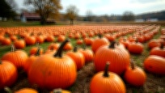
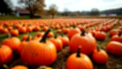

1. Basic Resampled (Méthode API actuelle)

File: method1_basic_resampled.jpg
Size: 88.5 KB
Technique: imagecopyresampled standard + filtres légers
Quality: JPEG 95%
2. Enhanced Resampling

File: method2_enhanced_resampled.jpg
Size: 132.8 KB
Technique: imagecopyresampled + contraste/netteté améliorés
Quality: JPEG 98%
3. Two-Step Progressive
File: method3_two_step.jpg
Size: 153.8 KB
Technique: Redimensionnement progressif (50% puis final)
Quality: JPEG 98%
4. PHP imagescale (Bicubic) ⭐
File: method4_imagescale_bicubic.jpg
Size: 151.5 KB
Technique: PHP imagescale avec interpolation bicubique
Quality: JPEG 98%
Note: Meilleure qualité théorique avec algorithme bicubique